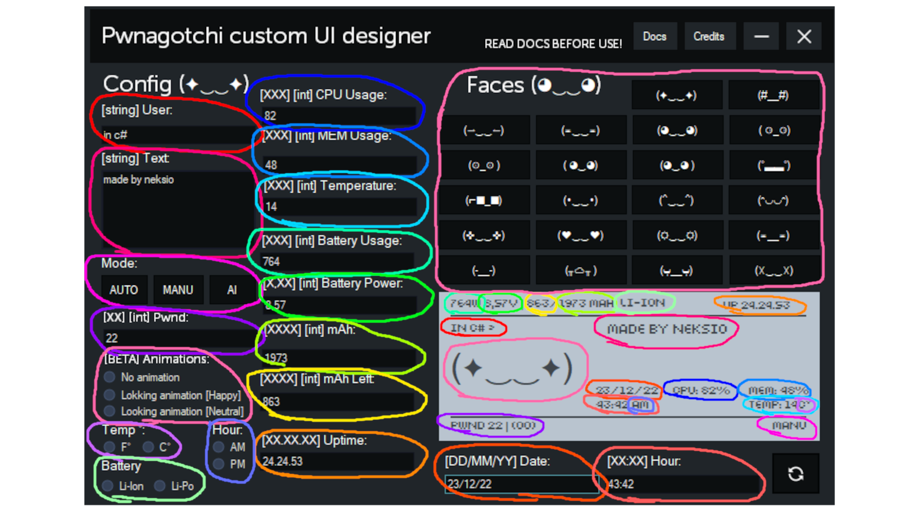

Pwnagotchi Custom UI Designer Documentation
Remember to fill all the options except animations, faces, temperature, battery type and hour to make sure that all informations on pwnagotchi are correct, it's beta version of the project so anything can be buggy.
How hour, temp and battery works?
First fill up all the text boxes and click refresh button in left down corner and then click the circle buttons for temp, hour and battery. After doing this all units can be changed
How animations works?
Animation runs for 7 seconds for this time you can't change face to normal face
NOTE!
If you change any information or input information for the first time in any text boxes you need to click the refresh button!
USAGE:

*Battery usage is remaked and you can't really do it on normal pwnagptchi, cpu, mem, temp is changed also
**https://pwnagotchi.ai owns pwnagotchi AI technology go check them out!
***If you don't understand something open issue on github or write to me on discord: neksio#1018